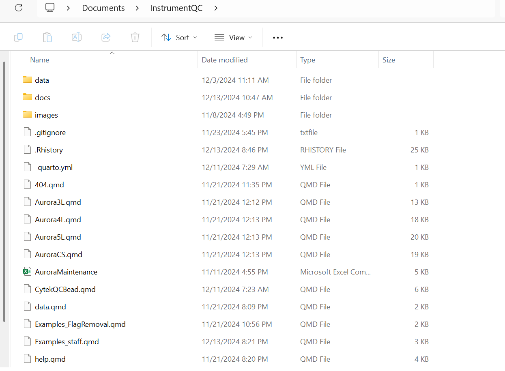

install.packages("dplyr")
install.packages("ggplot2")
install.packages("devtools")
install.packages("BiocManager")Introduction
In the previous sections, we installed the required software, and set up the Git permissions needed for Rstudio and GitHub to communicate with each other to pass along the updated files stored locally to your remote repository.
The following portion focuses on the next steps occurring on the individual local computers. We will need to first install the R packages that will be needed for data processing and handling. Then we will update the file.paths within the .R and .qmd files so that R knows in which folders on your local computer to look for your Daily QC report .csv and fcs files. This editing of the file.path is necessary, as the current file paths within those files is set to find the locations as seen on the UMGCC flow core computers, not yours.
R Packages
R is a programming language, originally focused primarily on statistical analysis. Through the work of many individuals over the years, its versatility has expanded to other areas, mainly thanks to creation of additional R packages that once installed (and loaded via the library call) expand the functionality allowing you to do countless things not present in the original (base). We had an example of this in the last section when installed the devtools package to allow us to set up communication between RStudio and GitHub.
These R packages are typically stored and available through either the 1) CRAN, or 2) Bioconductor repositories. Additional R packages (especially those still under development) are only available via 3) GitHub. Knowing in which repository a package can be found is important, as the code you will type for installation will vary for each.
CRAN
We will start by first installing some of the R packages we will need that are found on the CRAN repository. To do so, we will first run the following code chunk:
When installing a package, we surround the package name in quotation marks. Forgetting these is a common source of error for begginers in R. For the above, we installed: the R package dplyr, which is useful for rearranging data columns and rows; the R package ggplot2 used for many data visualizations. And finally we installed BiocManager, which is the installation manager for packages stored in the Bioconductor repositories. We will use some of the functions within in the next section.
Bioconductor
Bioconductor is a repository of R packages specialized for bioinformatics. The majority of Cytometry R packages can be found here. We will begin by installing a few of them by executing the following R code below:
library(BiocManager)Notice, to be able to install the Bioconductor packages, we first need to load the BiocManager package into active use through the library call. Unlike the install.packages() function where we surround the R package name in quotation marks, this is not required for the library() function.
Now that BiocManager is active, we can install packages from BiocManager by following the code chunk below:
install("flowCore")
install("flowWorkspace")
install("ggcyto")The above packages being installed were flowCore and flowWorkspace, that provide the base infrastructure needed for working with .fcs files in R, and ggcyto, which is used for visualizing the data.
And finally, we will install one package from GitHub using devtools. This package is our R package Luciernaga, where the functions to process the Daily QC data files and assemble the dashboard are stored. We are in the process of submitting it to Bioconductor, but until then, it is available for now via GitHub.
library(devtools)
install_github("https://github.com/DavidRach/Luciernaga", dependencies = TRUE)Troubleshooting
When an R package is being installed, you will see messages being displayed in the consolde below as it is setup on your computer. When installation fails, there will be troubleshooting messages displayed. Typically, an R package will fail to install due to a missing dependency, ie, another R package needs to be installed first before it can be installed. By reading the failed to message note carefully, we can identify the missing package name. From there, by searching online, we can identify whether it is a CRAN or a Bioconductor package, and then use the correct installation code shown above to install that package. Once this is done, we can attempt to install the R package that had failed to install.
Summary
With the steps above executed, you now should have the main R packages needed to run the R code needed to process the instrument QC data and assemble the Quarto dashboard. Congratulations on making progress!
File Paths
As mentioned in the introduction, within the .R and .qmd files are lines of code containing file.paths. These serve as addresses used by the software to find folders containing the necessary daily QC files on your individual computer. Since installation of SpectroFlo (and its associated files) will differ, you will need to ensure to update these file paths so that your computer can retrieve the daily QC files from the correct folder when prompted to do so by the executed R scripts.
Before we go track all the places we need to swap out the file.paths at, lets talk the overall structure of the Rstudio Project.
Overall Layout
In the previous section when you created in Rstudio the New Project via Git, you saved the New Project folder to a specific location (we suggested Documents). If you navigate to your Documents folder and double click on the project, you will see something that resembles this layout:
 The .qmd files are primarily either used in the creation of the dashboard, or for manual exectuion of the processing of the data (to be discussed later). Then there are .R files that are actual scripts that process the data, either when manually told to or as scheduled by the TaskScheduler. Then you have several subfolders (data, docs, images). For this section, we will focus on data, as it is where new QC files get copied to, processed and stored, and subsequently used in assembly of the dashboard website.
InstrumentQC
Let’s start with the easiest file.path, we need to find the location you saved the InstrumentQC project to when you downloaded it from Github via Rstudio (recall the browse button to see where it was saved).
Within the InstrumentQC folder, the first level contains the individual R scripts and .qmd files for each instrument, as well as additional files needed for the automation, and dashboard assembly. Below this level, there is a data folder containing folders for the individual instruments. Below this level, are folders containing the archive data folders where processed data is stored after processing and updated with new data daily.
On first install, modify the names of the folders for your individual instruments, and navigate into the archive folders for the renamed instruments and delete the forked version of the data. These archive data files will be replaced by those of your own instrument after the initial processing.
Next, you will need to modify the existing Rscript to match the following names, and to point at the Cytekbio Setup folder containing the DailyQC files and to the folder containing the bead .fcs files used as part of the MFI monitoring. Make sure these are correct.
Now, on the upper right hand side, hit the Source option. This should trigger the processing of the entire R script needed to process the past data. If it fails, you will need to troubleshoot whether the file.path your provided is the correct one (most likely error) or an R package dependency is missing (in which case it would need to be installed).
Once complete, you should see the processed data is now present within the Archive folder.
Open up the equivalent .qmd file for your given instrument. This file is what will build the dashboard for the equivalent instrument page on the website. Make sure to similarly modify the file.paths at the top of the file so they match your Archive folder for that project. Once done, hit render button and wait, troubleshooting as needed. Both R script and .qmd will be specific and search for the data within those folders, so we anticipate less issues.
Once done, either a browser window will open showing the data for the instrument, or you will need to go to InstrumentQC, docs folder and open the index.html file to see a local rendered version of the file. Once you are here, congratulations, the basic install for your instrument has been carried out successfully. Repeat for the other instruments for the time being.


Bead Files


 ## Local
## Local